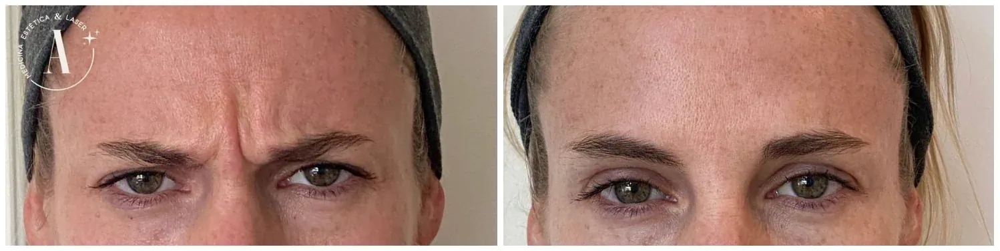

📍 Si vivís o trabajás en Palermo, nuestro consultorio es tu mejor opción.
Dedicación y Tiempo para Conocerte:
💬 Agenda Tu Consulta Ya!Si sentís que las líneas de expresión empiezan a marcarte más de lo que te gustaría, el Bótox puede ayudarte a prevenir y suavizar esas arrugas sin cambiar tu esencia. Se trata de un procedimiento médico seguro, realizado con toxoina botulínica tipo A, que actúa relajando de forma temporal los músculos responsables de las arrugas dinámicas, especialmente en frente, entrecejo y patas de gallo.
El resultado: una piel más descansada, luminosa y fresca, sin perder tu expresión ni tu naturalidad. En nuestro centro, cada aplicación es personalizada y realizada por profesionales médicos, para que te sientas segura y acompañada en todo momento.
Es común confundir estos dos tratamientos, pero cada uno tiene una función específica:
En muchos casos, estos tratamientos se combinan para lograr un rejuvenecimiento facial integral, adaptado a las necesidades de cada paciente.
Los efectos del Bótox comienzan a notarse entre 2 y 7 días después de la aplicación, con resultados óptimos a las 2 semanas. La duración del efecto es de 3 a 5 meses, dependiendo de factores individuales como el metabolismo, la zona tratada y la frecuencia de aplicación.
Sí. Cuando es aplicado por un profesional médico certificado, el Bótox es un procedimiento seguro y predecible.
Sin embargo, es importante tener en cuenta:
💬 ¡Consultanos ahora por WhatsApp!
3 CUOTAS SIN INTERÉS
Con evaluación y supervisión médica. Consulta por Promos y Combos.
"La Dra Agustina es súper cálida y sabe escuchar tus necesidades, me hice Botox y relleno de labios, estoy encantada. Sumamente recomendable"
— Agustina G."La Dra. Alvarez es un 10! Me explicó todo antes de aplicarme bótox, fue muy clara y el resultado es natural. Se nota que sabe lo que hace."
— Cecilia B."Me hice varios tratamientos con la doctora, incluido bótox, y siempre quedé feliz. Es muy profesional, cercana y cuidadosa."
— An V."Pasé años probando lugares para mi piel. Acá encontré resultados reales. El bótox me lo aplicó con mucha precisión, nada exagerado. ¡Gracias!"
— Marcela N.Estamos en Federico Lacroze 2306, Belgrano. Si estás buscando aplicación de Bótox en Palermo con supervisión médica, puedo ayudarte a lograr un resultado natural y armonioso.